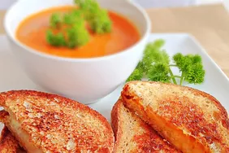

Grilled Cheese Sandwich

The Best Homemade Grilled Cheese Sandwich
Learn how to make a grilled cheese sandwich in a nonstick pan with buttered bread and American Cheddar for a classic hot sandwich.
Ingredients
Best Cheese For Grilled Cheese
Cheddar
American
Gruyere
Brie
Fontina
Gouda
Best Bread For Grilled Cheese
White
Sourdough
Brioche
Ciabatta
Steps
- Butter the bread on one side and place the bread butter-side down on a hot skillet.
- Top with cheese, then place another slice of bread on top (butter-side up).
- Cook until the bottom slice is lightly browned, then flip.
- Continue cooking until the cheese is melted.
Grilled cheese sandwiches are delicious with all sorts of sides and entrees, but they pair particularly well with tomato-based soups and stews. Try one of these top-rated recipes:
Fresh Tomato Soup
Homemade Chili
Italian Sausage Soup with Tortellini